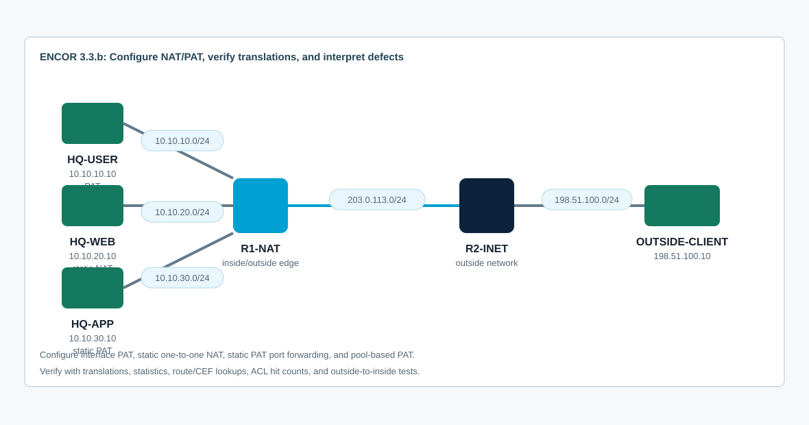

Overview
This lab targets ENCOR 3.3.b: configure NAT/PAT. You will configure outbound PAT for users, one-to-one static NAT for an inside server, static PAT port forwarding for another inside service, and a pool-based PAT variant. The point is not just to paste commands; you must prove how inside local, inside global, outside local, and outside global addresses appear in the translation table.
The starting CML topology has addressing and routing only. NAT is intentionally absent so you can see the failure mode first, then configure and verify each NAT behavior.
Topology
R1-NAT is the enterprise edge. HQ-USER uses outbound PAT. HQ-WEB receives a one-to-one static NAT. HQ-APP receives a TCP static PAT mapping. R2-INET represents the outside network and OUTSIDE-CLIENT tests inbound and outbound reachability.

Console access: On IOS routers, enter enable and terminal length 0 before running the router show/configuration commands. Alpine endpoints use username cisco and password cisco.
Task 1: Baseline Without NAT
Confirm the underlay before configuring NAT. The inside hosts should reach R1-NAT, and R1-NAT should reach R2-INET. Inside hosts should not have successful outside connectivity yet because their private addresses are not translated.
enable
terminal length 0
show ip interface brief
show ip route
show ip cef 198.51.100.10
ping 203.0.113.1
ping 198.51.100.10 source 203.0.113.2
show running-config | include ip natFrom HQ-USER, test toward the outside client:
ping -c 3 198.51.100.10
traceroute 198.51.100.10Expected interpretation: routing exists at the edge, but traffic sourced from 10.10.10.10 needs NAT before it can return from the outside network.
Task 2: Configure Interface PAT for Inside Users
Configure R1-NAT so HQ-USER traffic overloads on the outside interface address. Verify the interface roles and the translation table.
ip access-list standard NAT-USERS
permit 10.10.10.0 0.0.0.255
!
interface Ethernet0/0
ip nat inside
interface Ethernet0/1
ip nat inside
interface Ethernet0/2
ip nat outside
interface Ethernet0/3
ip nat inside
!
ip nat inside source list NAT-USERS interface Ethernet0/2 overloadVerify the policy before generating traffic:
clear ip nat translation *
clear ip nat statistics
show access-lists NAT-USERS
show ip nat statistics
show ip nat translationsGenerate traffic from HQ-USER, then return to R1-NAT and verify the dynamic translations:
ping -c 5 198.51.100.10show ip nat translations
show ip nat translations verbose
show ip cef 198.51.100.10Depth check: PAT translates many inside local addresses to one inside global address by using transport identifiers such as TCP/UDP ports, or ICMP identifiers for ping traffic.
Troubleshooting note from live CML: A router-originated ping from R1-NAT does not prove inside dynamic PAT, because the traffic is sourced by the NAT router itself instead of by an inside host matching NAT-USERS. Use HQ-USER to create the dynamic PAT entries, then verify them on R1-NAT.
Task 3: Configure One-to-One Static NAT
Publish HQ-WEB with a dedicated inside global address. Outside clients should target the global address, not the private address.
ip nat inside source static 10.10.20.10 203.0.113.20
show ip nat translations
show ip nat statistics
show ip route 203.0.113.20From OUTSIDE-CLIENT, test the global address:
ping -c 3 203.0.113.20
traceroute 203.0.113.20Interpret the translation row. Static NAT creates a persistent mapping even before traffic passes, while dynamic PAT entries appear after matching traffic is generated.
Task 4: Configure Static PAT Port Forwarding
Publish only TCP port 8080 on HQ-APP by mapping outside TCP port 8080 to the inside server. This is different from one-to-one static NAT because only a specific protocol and port are exposed.
ip nat inside source static tcp 10.10.30.10 8080 203.0.113.30 8080
show ip nat translations | include 203.0.113.30
show ip nat statisticsOn HQ-APP, start a simple Netcat-backed listener if it is not already running:
while true; do printf "HTTP/1.1 200 OK\r\nContent-Length: 7\r\n\r\nhq-app\n" | nc -l -p 8080; done &
ps | grep ncFrom OUTSIDE-CLIENT, test the port mapping:
wget -O- http://203.0.113.30:8080
nc -vz 203.0.113.30 8080If HTTP tools are unavailable, use nc -vz 203.0.113.30 8080 and the router outputs to verify the static TCP translation.
Troubleshooting note from live CML: The Alpine image used here did not include the busybox httpd applet, and the non-root cisco user could not write to /www. A refused TCP connection on the global address means the NAT path may be present but the inside service is not listening. Use the Netcat listener above for a tool that exists in this image.
Task 5: Compare Interface PAT and Pool-Based PAT
Replace interface PAT with a small inside global pool. This shows a second common PAT style and makes it obvious which global address was allocated.
no ip nat inside source list NAT-USERS interface Ethernet0/2 overload
clear ip nat translation *
ip nat pool NAT-POOL 203.0.113.40 203.0.113.45 netmask 255.255.255.0
ip nat inside source list NAT-USERS pool NAT-POOL overload
show running-config | include ip nat inside source|ip nat pool
show ip nat statisticsGenerate new traffic from HQ-USER:
ping -c 5 198.51.100.10Return to R1-NAT and compare the table:
show ip nat translations
show ip nat statisticsInterpretation: both methods perform PAT, but interface PAT uses the outside interface address while pool PAT allocates from the configured inside global pool.
Task 6: Troubleshoot NAT/PAT Defects
Use symptoms and outputs to prove the defect before repairing it. These are the failure patterns you should be able to recognize at CCNP level:
- The ACL does not match the real inside local subnet, so no dynamic translations are created.
ip nat insideandip nat outsideare missing or applied to the wrong interfaces.- The outside network has no route back to the inside global address or pool.
- A static NAT and static PAT use the same global IP and protocol/port, creating a conflict.
- A route-map or ACL is too broad and translates traffic that should remain private.
- Existing translations remain after a config change, so verification is using stale state.
show ip nat translations
show ip nat translations verbose
show ip nat statistics
show running-config | include ip nat
show running-config interface Ethernet0/0
show running-config interface Ethernet0/2
show access-lists
show ip route 203.0.113.20
clear ip nat translation *Depth check: NAT is not routing. NAT can change packet addresses, but the translated address still needs a valid route in both directions. Always validate NAT policy, interface role, route table, and actual translations.